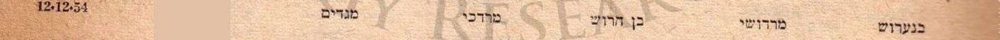
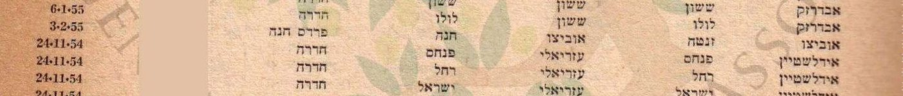
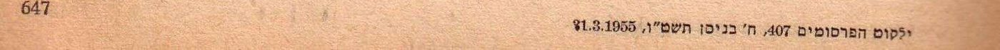
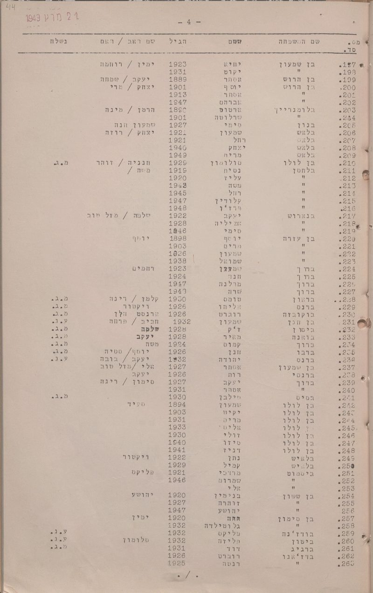

העמוד הזה טוען את התצלומים ואת המסמכים ישירות מתיקיית docs/ שלצדו — לחיצה על כל ראיה פותחת את קובץ המקור המלא.
מרדכי בן הרוש — בעלה של מרים לבית דהן — נולד לפי המשפחה ב-1931 במרוקו (העיר אינה ידועה), בנם של יונה ויקוט, עלה לישראל ב-1947 או ב-1948, ונפטר ב-2010.
התמונה נכון להיום: אין עדיין מסמך שניתן לייחס לו בביטחון. המועמד היחיד שנשאר פתוח הוא רישום שינוי שם בילקוט הפרסומים: "בנערוש מרדושי" ממושב מגדים, שקיבל את השם "בן הרוש מרדכי" ב-12.12.1954. הרישום עצמו מאומת; הזיהוי שלו כמרדכי מדורג טעון אימות. שאלה אחת למשפחה — האם מרדכי גר במגדים או בסביבת עתלית בשנות החמישים, והאם קראו לו "מרדושי" — תכריע.
שש רשומות אחרות בשם דומה נשללו לפי שנת לידה, הורים או מוצא. כל מקור מופיע פעמיים: קישור אל הרשומה בארכיון וקישור אל עותק שמור. גם ממצא שלילי נרשם, עם הכיסוי המדויק שלו.
מאיפה להתחיל
- מה ידוע מהמשפחה — נקודת המוצא.
- המועמד הפתוח — מגדים 1954 — הרישום, למה הוא סביר, למה הוא לא מוכרע.
- מועמדים שנשללו — שש רשומות והנימוק לכל אחת.
- מה נסרק ולא נמצא — רשימות העולים 1947–1949 ופנקסי אליאנס.
- הפעולות הפתוחות — השאלה שמכריעה, ומה אחריה.
1. תמצית
מרדכי בן הרוש, בעלה של מרים לבית דהן, נולד לפי המשפחה ב-1931 במרוקו (העיר אינה ידועה), בנם של יונה ויקוט, עלה לישראל ב-1947 או ב-1948, ונפטר ב-2010.[4] דף זה מרכז את מה שנבדק עד כה בארכיונים הישראליים ובפנקסי אליאנס במרוקו, את המועמדים שנמצאו ואת מה שנשלל.
התמונה נכון להיום: אין עדיין מסמך שניתן לייחס למרדכי בביטחון. המועמד היחיד שנשאר פתוח הוא רישום שינוי שם בילקוט הפרסומים מ-1955: "בנערוש מרדושי" ממושב מגדים, שקיבל את השם "בן הרוש מרדכי" ב-12.12.1954.[1] הרישום עצמו מאומת; הזיהוי שלו כמרדכי בעלה של מרים מדורג טעון אימות, ופרק 3 מסביר למה הוא סביר ולמה הוא לא מוכרע.
מה שנשלל: שש רשומות בשם דומה או קרוב ב-IGRA וברשימות העולים, שפרטיהן (שנת לידה, הורים, מוצא) אינם מתיישבים עם הידוע (פרק 4).
2. מה ידוע מהמשפחה
המידע שנמסר, והוא הבסיס לזיהוי — לא ראיה בפני עצמו:[4]
- מרדכי בן הרוש. שנת לידה 1931 (המשפחה אינה בטוחה שכך רשום בתעודת הזהות). מקום הלידה במרוקו — לא נמסר.
- הוריו: יונה ויקוט.
- עלה ב-1947 או 1948. לא ידוע אם לבדו או עם הוריו.
- נישא למרים דהן (ילידת מכנאס, 1939; עלתה 1956) — המחקר על מרים.
- נפטר ב-2010; קבור בבית העלמין ירקון. מקום הקבורה מחוץ למטרות הדף.
3. המועמד הפתוח — "בנערוש מרדושי", מגדים, 1954
3.1 הרישום
ילקוט הפרסומים 407, ח' בניסן תשט"ו (31.3.1955), עמ' 647, "הודעה בדבר שינויי שם", רשימה מס' 10, מחוז חיפה — נפת חדרה.[1] השורה:
| שדה | קריאה | דירוג |
|---|---|---|
| השם הקודם | בנערוש · מרדושי | מאומת — דפוס ברור |
| השם החדש | בן הרוש · מרדכי | מאומת |
| מקום המגורים | מגדים | מאומת |
| תאריך אישור השינוי | 12.12.54 | מאומת |
| מספר הזהות | מושחר בסריקה | — |



3.2 למה זה סביר
- מגדים הוא מושב ליד עתלית, שהוקם ב-1949 על ידי עולים מצפון אפריקה.[7] צעיר שעלה ממרוקו ב-1947/48 ועבר דרך מחנה עתלית הוא בדיוק הפרופיל של מתיישבי המקום.
- "מרדושי" הוא צורת חיבה מרוקאית של מרדכי; החלפתה ב"מרדכי" ו"בנערוש" ב"בן הרוש" היא בדיוק סוג התקנון של שמות שעולי מרוקו עשו בשנות החמישים.
- בגיל 23 (אם נולד ב-1931) הוא היה בגיל שבו רווקים ממגדים ומעתלית רשמו שינוי שם לקראת גיוס, עבודה או נישואין.
3.3 למה זה לא מוכרע
- ההודעה אינה כוללת שנת לידה או שמות הורים; מספר הזהות מושחר בסריקה.
- השם מרדכי בן הרוש נפוץ; ב-IGRA לבדו יש שש רשומות בשם זה מהשנים 1949–1954 (פרק 4).
- אין עדיין מסמך אחר שמקשר את מרדכי בעלה של מרים למגדים או לעתלית.
הכרעה: שאלה למשפחה. אם מרדכי גר במגדים או בסביבת עתלית בשנות החמישים, או אם כונה "מרדושי" — הזיהוי עולה ל"כמעט ודאי". אם לא — הרשומה נשללת.
4. מועמדים שנשללו
| מקור | מה רשום | למה נשלל | דירוג |
|---|---|---|---|
| רשימת עולים אפריל 1949, גל-15493/6 מסמך 192 שורה 54 — "מרדכי בנארוש"[2] | יליד 1910 | פער של 21 שנה משנת הלידה המשפחתית | נשלל |
| רשימת עולי קיבוץ רשפים 1949 (יד יערי), עמ' 12 שורה 2 — "מרדכי בן-ארוש"[3] | יליד 1927; נקלט בקיבוץ של השומר הצעיר | ארבע שנים הפרש; אין קשר ידוע לקיבוץ | ככל הנראה נשלל |
| רשימת עולים אוקטובר 1949, גל-15494/5, עמ' 20 — "בן ארוש מכלוף"[5] | יליד 1931 | שם פרטי אחר; ההורים בעמודה אינם יונה/יקוט | נשלל |
| רשימת עולים מרץ 1949 חלק ב, גל-15493/3, עמ' 45, שורות 199–202 — משפחת בן הרוש (אסתר 1889, יוסף 1901, אסתר 1913, אברהם 1947)[6] | "יקוט" בשורה 198 שייכת למשפחת בן שמעון שמעליהם | אין מרדכי; ההורים אחרים | נשלל |
| רשימת עולים יוני 1949, גל-15493/8, עמ' 150–151 — משפחת הרוש (יצחק, עמרם, חנה, רחל, ישראל, אליס, פרחה, רחמה, אסתר)[5] | תשע נפשות ממרוקו | אין מרדכי; אין יונה/יקוט בעמודת ההורים | נשלל |
| IGRA, "Harush" + "Mordekhai" — 13 רשומות (נוטרים 1936/1947, שבויים 1948, שאלון עולה 1950 יליד קהיר, צפת 1839 ועוד)[8] | — | אף אחת עם שנת לידה 1931 או הורים יונה/יקוט | נשלל |

5. מה נסרק ולא נמצא
5.1 רשימות העולים 1947–1949
ארכיון המדינה, חטיבות S‑104 (1948) ו-גל‑15492 עד גל‑15494 (1947–1949), דרך אוסף Google Pinpoint:[5] 29 קבצים אותרו; ב-16 מהם נקראו כל העמודים שבהם ה-OCR מזהה "הרוש", "ארוש" או "בנארוש"; ב-13 קבצים (ובהם חלקים שניים ושלישיים של קבצי 1948) כלי האיתור לא החזיר עמודים כלל, והם לא נקראו. לא נמצא בלוק "בן הרוש מרדכי" עם ההורים יונה/יקוט. הממצא השלילי מדורג ככל הנראה בלבד: ה-OCR של הרשימות עמודתי ומשבש שיוך שורות, חיפוש ביטויים מדויקים אינו עובד בכלי, ושליש מהקבצים לא נקרא. פירוט הכיסוי בסעיף 9.4.
5.2 פנקסי אליאנס במרוקו
מסד "תלמידים 1917–1964 אליאנס מרוקו" (IGRA):[9] נבדקו כל הרשומות של הכתיבים Benharoch / Benharroch / Benarroch / Ben Aroch (אשכול של כ-455 רשומות) ו-Haroch / Harroch / Harouch / Harrouche בשנים 1937–1946, עם השם הפרטי Mardochée ובלעדיו. לא נמצא נער בשם מרדכי (Mardochée) בשם משפחה מהאשכולות האלה שנולד בין 1929 ל-1933. שני "Mardochée Haroche/Haroch" בספרו (1939 בן 11; 1944 בן 8) אינם מתיישבים זה עם זה ואף לא עם 1931. נמצאו 13 נערים בשמות אלה ילידי 1929–1933 בקזבלנקה, פאס וטנג'יר בשמות פרטיים אחרים — ייתכן שם פרטי שני. הפנקסים אינם מאונדקסים לפי שמות הורים, ולכן אימות "יונה/יקוט" מחייב פתיחת סריקה. הממצא השלילי מדורג ככל הנראה: כיסוי חלקי (חמש שנים מהאשכול הגדול לא נסרקו שנה-שנה), והעיר אינה ידועה.
5.3 אחר
עיתונות (JPress, 2009–2011): אין מודעת אבל. IGRA קבורות: אין. אתר חברה קדישא תל אביב‑יפו: מחזיר נתוני דוגמה בלבד (מקום הקבורה, ירקון, ידוע מהמשפחה ואינו ממטרות הדף).
6. עץ המשפחה
העץ מוצג בתרשים במקטע העץ. בטקסט:
- יונה בן הרוש — אביו (משפחה). לידה, מקום, פטירה — טעון אימות.
- יקוט בן הרוש — אמו (משפחה). טעון אימות.
- מרדכי בן הרוש — 1931 (משפחה) – 2010 (משפחה). עלה 1947/48. אפשר שהוא "מרדושי בנערוש" ממגדים (1954) — טעון אימות.
- נשוי למרים לבית דהן (1939, מכנאס) — המחקר על מרים.
יקוט הוא גם שם אמה של מרים (יקוט דהן). אלו שתי נשים שונות — חמות וכלה בעלות אותו שם פרטי, שם מרוקאי נפוץ.
7. פעולות פתוחות
| # | פעולה | מה זה ישנה | מי |
|---|---|---|---|
| 1 | מגדים / "מרדושי" — לשאול במשפחה | מכריע את המועמד היחיד הפתוח. אם כן: לבקש מרשות האוכלוסין את תיק שינוי השם (בן משפחה מדרגה ראשונה) — התיק כולל את מספר הזהות ואת פרטי הלידה | משפחה |
| 2 | עיר הלידה במרוקו | בלעדיה אין דרך לבחור את פנקס האליאנס הנכון | משפחה |
| 3 | לבדו או עם ההורים? | אם לבדו — עליית הנוער (הארכיון הציוני המרכזי) ורשימות המעפילים דרך קפריסין 1947–48; אם עם הוריו — לחפש את יונה ויקוט ברשימות 1947–49 (ב-IGRA אין "יונה בן הרוש" כלל) | משפחה, ואז ארכיון |
| 4 | 13 הקבצים שלא נקראו ברשימות 1947–49 | קריאה עמוד-עמוד (כ-3,000 עמודים) — כדאי אחרי שיהיו חודש עלייה או שם אונייה | ארכיון |
| 5 | תעודת הזהות / תעודת פטירה של מרדכי | שנת לידה מדויקת ושמות ההורים כפי שנרשמו בישראל; קובע גם את כתיב השם לחיפושים הבאים | משפחה |
8. סיכום המקורות
הרשימה המלאה באינדקס המקורות. ערך 1 הוא המועמד הפתוח; ערכים 2, 3, 6 ו-8 — המועמדים שנשללו; ערכים 5 ו-9 — הסריקות השליליות; ערך 7 — מקור העזר על מגדים.
9. שיטה ומגבלות
9.1 בסיס הראיות
ילקוט הפרסומים (מקור ראשוני מודפס, דרך סריקת IGRA); רשימות העולים של ארכיון המדינה (מקור ראשוני שנקרא דרך OCR רועש); אינדקסים של IGRA (מקור עזר); מידע משפחתי (פרק 2).
9.2 סולם הוודאות
מאומת — נקרא ישירות מהמסמך; כמעט ודאי — מסמכים מתכנסים; ככל הנראה — פרשנות סבירה; טעון אימות — לא נבדק או לא מוכרע. הרישום במגדים "מאומת" כמסמך; הזיהוי שלו כמרדכי — "טעון אימות".
9.3 מוסכמות הכתיב
בן הרוש · בנהרוש · בן-הרוש · בנערוש · בנארוש · הרוש — כולם אותו שם בכתיבים שונים; Benharoch / Benharroch / Benarroch בצרפתית של הפנקסים. "מרדושי" — כינוי חיבה של מרדכי.
9.4 ממצאים שליליים
| # | שאלה | מקור וכיסוי מדויק | תוצאה | דירוג |
|---|---|---|---|---|
| N-1 | "בן הרוש מרדכי" (~1931, יונה/יקוט) ברשימות העולים 1947–1949 | ארכיון המדינה/Pinpoint, 29 קבצים; נקראו עמודי "הרוש/ארוש/בנארוש" ב-16 קבצים (S-104-607/612/613/614; גל-15492/1; 15492/2 חלק א; 15492/5 חלקים א–ב; 15493/1, 15493/2 חלק א, 15493/3–8; 15494/1, /2, /5, /6, /7); 13 קבצים לא נקראו (15492/2 חלק ב, 15492/3, 15492/4, 15492/5 חלק ג, 15493/2 חלק ב, 15494/3, /4, /8 ועוד)[5] | אין בלוק תואם | ככל הנראה — סריקה חלקית |
| N-2 | Mardochée Ben Haroch (~1931) בפנקסי אליאנס מרוקו | IGRA: אשכול Benharoch/Benarroch (455 רשומות; 1940, 1941, 1943, 1944, 1946 שנה-שנה + Mardochée בכל השנים) ואשכול Haroch/Harroch (1937–1946 שנה-שנה)[9] | אין Mardochée יליד 1929–1933; 13 נערים ילידי 1929–1933 בשמות אחרים (שמות הורים לא נבדקו) | ככל הנראה — חלקי |
| N-3 | "יונה בן הרוש" ב-IGRA | כל המאגרים, עברית ולטינית[8] | אפס | ככל הנראה |
| N-4 | מודעת אבל 2010 | JPress, כל העיתונים, 2009–2011 | אפס | ככל הנראה |
9.5 חסמים
תיק שינוי השם ברשות האוכלוסין ניתן לבקשה רק על ידי בן משפחה מדרגה ראשונה. ב-13 מקובצי רשימות העולים 1947–49 כלי האיתור לא עבד, והם דורשים קריאה עמוד-עמוד.
9.6 מה הדף אינו עושה
אינו מתעד את מקום הקבורה; אינו מסתמך על עצים משפחתיים מקוונים; אינו מכריע על סמך שם בלבד.
עץ המשפחה
כל התאריכים — לפי המשפחה; טרם תועדו במסמך. הרישום במגדים הוא מועמד פתוח.
גלילה אופקית בתוך המסגרת מציגה את העץ במלואו, וכפתורי ההגדלה שמעליה מגדילים את הכתב; בהדפסה הוא מקבל עמוד לרוחב משלו.
פתיחת העץ בעמוד נפרד ↗מסמכי מפתח
המסמכים שעליהם נשען עיקר הדוח, בסדר שבו הם נדונים בו. לחיצה פותחת את הסריקה המלאה.
אינדקס האנשים
כל אדם שהדוח מתעד, עם קישור אל הפרק שבו הוא נדון. שדה החיפוש שבראש העמוד מחפש גם בכתיבים החלופיים של השמות.
אינדקס המקורות
רשימת מקורות
לכל ערך: מהות המקור ומעמדו, ההפניה החיצונית למסמך המקורי, העותק המקומי השמור בתיקיית המחקר, ומה בדיוק הוא מוכיח. "עותק מקומי" פירושו עותק של המסמך עצמו. כל המקורות נצפו בספטמבר 2026.
מקורות ראשוניים
1. ילקוט הפרסומים 407, ח' בניסן תשט"ו (31.3.1955), עמ' 647 — הודעה בדבר שינויי שם, רשימה 10, מחוז חיפה — נפת חדרה (המועמד הפתוח)
- מהות: הרשומות הרשמיות של מדינת ישראל; העמוד סרוק בספריית המשפטים ע"ש דוד י. לייט, אוניברסיטת תל אביב, ואונדקס ב-IGRA (שינויי שמות לאחר 1948, כרך 13, גיליון 407, רשימה 10).
- מקור חיצוני: IGRA-1948-68-nc-22163 · סריקת העמוד בשרת IGRA
- עותק מקומי: העמוד המלא · חיתוך השורה · כותרת הרשימה · תחתית העמוד
- מה הוא מוכיח: "בנערוש מרדושי" ממגדים קיבל את השם "בן הרוש מרדכי" ב-12.12.1954 — מאומת. שזה מרדכי בעלה של מרים — טעון אימות.
2. ארכיון המדינה, רשימת עולים אפריל 1949, גל-15493/6, מסמך 192, שורה 54 — "מרדכי בנארוש" (נשלל)
- מקור חיצוני: IGRA-1949-ImmigApr-19673
- מה הוא מוכיח: מרדכי בנארוש יליד 1910 — אדם אחר.
- הערה: אין עותק מקומי — רשומת אינדקס; הסריקה ב-IGRA לא נשמרה כי הרשומה נשללה.
3. ארכיון יד יערי, רשימות שמיות של עולים — קיבוץ רשפים 1949, עמ' 12, שורה 2 — "מרדכי בן-ארוש" (ככל הנראה נשלל)
- מקור חיצוני: IGRA-Immigrants-Communal-Settlements-282
- מה הוא מוכיח: מרדכי בן-ארוש יליד 1927 נקלט ברשפים (השומר הצעיר) ב-1949. ארבע שנים מ-1931; אין קשר ידוע לקיבוץ.
- הערה: אין עותק מקומי — רשומת אינדקס.
4. מסירות משפחתיות (ספטמבר 2026) (מקור משפחתי — ללא מסמך)
- מהות: שנת הלידה 1931, ההורים יונה ויקוט, העלייה 1947/48, הפטירה 2010 והקבורה בירקון — נמסרו בעל-פה. המשפחה אינה בטוחה ששנת הלידה זהה לרשום בתעודת הזהות.
- מה הוא מוכיח: נקודת המוצא (פרק 2) — זיכרון, לא רשומה.
5. ארכיון המדינה — רשימות עולים 1947–1949 (S‑104‑607…614, גל‑15492/1–5, גל‑15493/1–8, גל‑15494/1–8), אוסף Google Pinpoint
- מהות: 29 קבצים; נקראו דרך שכבת ה-OCR של Pinpoint. כולל את "בן ארוש מכלוף" (אוקטובר 1949, גל-15494/5, עמ' 20) ואת משפחת הרוש (יוני 1949, גל-15493/8, עמ' 150–151) שנשללו.
- מקור חיצוני: האוסף ב-Pinpoint — חיפוש "בן הרוש מרדכי"
- מה הוא מוכיח: ממצא שלילי חלקי — סעיף 5.1, N-1.
- הערה: אין עותק מקומי לרשומות שנשללו על פי OCR בלבד.
6. ארכיון המדינה, רשימת עולים מרץ 1949 חלק ב, גל-15493/3, עמ' 45 — רשימה מיום 24.3.1949 (נשלל)
- מקור חיצוני: המסמך ב-Pinpoint
- עותק מקומי: העמוד (סריקה ברוחב 800)
- מה הוא מוכיח: משפחת בן הרוש (שורות 199–202) ללא מרדכי; "יקוט" בשורה 198 שייכת למשפחת בן שמעון.
מקורות עזר
7. אתר מושב מגדים (מקור עזר מקוון — משני)
- מקור חיצוני: homee.co.il — מגדים
- מה הוא מוכיח: "מגדים הוקם בשנת 1949 על-ידי קבוצת עולים מצפון אפריקה"; המושב סמוך לעתלית. מקור משני; אין לו עותק מקומי.
8. IGRA — חיפוש "Harush" + "Mordekhai" ו-"בן הרוש" + "יונה" (מקור עזר מקוון)
- מקור חיצוני: מסד הנתונים של IGRA
- מה הוא מוכיח: 13 רשומות בשם מרדכי הרוש/חרוש/ארוש (נוטרים 1936 ו-1947, שבויים 1948, שאלון עולה 1950 יליד קהיר, צפת 1839 ועוד) — אף אחת עם 1931 או יונה/יקוט; אין "יונה בן הרוש". ממצא שלילי.
9. IGRA — "תלמידים 1917–1964 אליאנס מרוקו", אשכולות Benharoch/Benarroch ו-Haroch/Harroch, 1937–1946 (מקור עזר מקוון)
- מקור חיצוני: מסד הנתונים של IGRA
- מה הוא מוכיח: ממצא שלילי חלקי — סעיף 5.2, N-2.
יומן המהדורות
מהדורה 1 · 11.09.2026
- דף ראשון. נתוני המשפחה: יליד 1931, בן יונה ויקוט, עלה 1947/48, נפטר 2010. נסרקו IGRA (שינויי שמות, עולים, קבורות, אליאנס מרוקו), רשימות העולים 1947–1949 (חלקית) ו-JPress.
- מועמד פתוח: "בנערוש מרדושי → בן הרוש מרדכי", מגדים, 12.12.1954 (ילקוט הפרסומים 407 עמ' 647). נשללו: בנארוש 1910, בן ארוש מכלוף 1931, משפחת בן הרוש 24.3.1949, משפחת הרוש יוני 1949; רשפים 1927 ככל הנראה נשלל.
מהדורה 2 · 11.09.2026
- הסבה לשלד המשותף של הארכיון, המנוע genealogy_site: report.md, sources-index.md, tree.html, פרק שיטה ומגבלות. נוספה ראיה 4 — עמוד רשימת העולים מ-24.3.1949 עם משפחת בן הרוש שנשללה. הדף: מרדכי-בן-הרוש.html.